Predicción del ruido radiado al agua por la hélice de un buque
Modelado hidrodinámico y acústico con OpenFOAM y Python
- OpenFOAM
- Python
- FW-H
- HPC
Metodología numérica para estimar el ruido que radia al agua la hélice de un petrolero a escala real, combinando CFD en OpenFOAM con la analogía acústica de Ffowcs Williams–Hawkings.
Por qué importa
El ruido submarino de origen humano preocupa por su efecto en la fauna marina, y el transporte marítimo es una de sus principales fuentes. En un buque en navegación, la hélice es la fuente dominante. Las directrices de la OMI de 2023, de carácter no vinculante, recomiendan reducirlo, y disponer de herramientas numéricas que permitan predecirlo en fase de diseño evita campañas de medida costosas.
El buque y la hélice
Petrolero de grandes dimensiones con una única hélice de paso fijo.
| Eslora entre perpendiculares | ~275 m |
| Velocidad de servicio | ~7,5 m/s |
| Número de Reynolds | ~1,7 × 10⁹ |
| Hélice | 4 palas, D ~9 m |
| Velocidad de giro | ~70 rpm |
| Frecuencia de paso de pala (BPF) | ~4,7 Hz |
Cómo se ha hecho
Una estrategia desacoplada en cuatro pasos, con OpenFOAM Foundation 13 y Python:
- Casco aisladoSimulación del flujo alrededor del volumen sumergido con pimpleFoam (monofásico, sin superficie libre) y modelo k-ω SST con funciones de pared. De ella se extrae la estela nominal en el plano de la hélice.
- Hélice en rotaciónSimulación RANS en un dominio rotante, pensada para recibir esa estela como condición de entrada. Los resultados presentados corresponden a entrada uniforme (ver Resultados).
- AcústicaScript en Python que implementa la formulación impermeable de Farassat 1A (analogía FW-H) para calcular la presión acústica en campo lejano y el nivel de presión sonora (SPL) en 16 receptores.
- ValidaciónBarrido del número de Reynolds sobre la geometría real del casco, comparando RANS y LES sobre la misma malla, para comprobar que los esquemas numéricos y el modelado turbulento responden de forma coherente.
Las simulaciones se ejecutaron en el superordenador FinisTerrae III (CESGA): unas 50 h con 64 procesos para el casco y unas 60 h con 16 procesos para la hélice.
Qué se obtuvo
Validación numérica: barrido de Reynolds
Se simuló el casco para Re entre 500 y 50 000, con la misma malla y los mismos esquemas numéricos, variando solo la viscosidad. A Re bajo, RANS y LES dan resultados casi idénticos. A partir de Re = 20 000, LES resuelve una estela turbulenta con estructuras que RANS no captura, y RANS no reproduce la transición laminar-turbulenta. LES es, por tanto, más fiel, pero inviable a Re ≈ 1,7 × 10⁹, lo que justifica usar RANS con funciones de pared (y⁺ ≈ 300) en el caso real. Al no disponer de datos experimentales propios, esta validación comprueba la coherencia numérica del método, no su precisión frente a medidas.
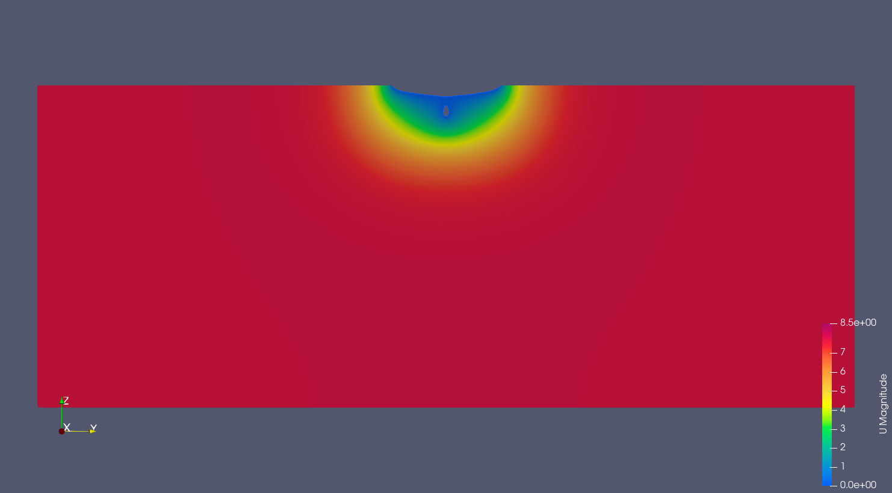
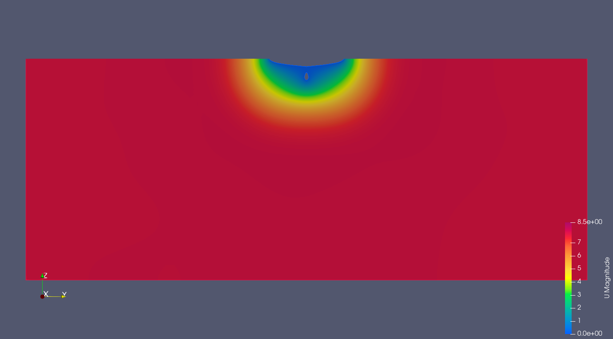
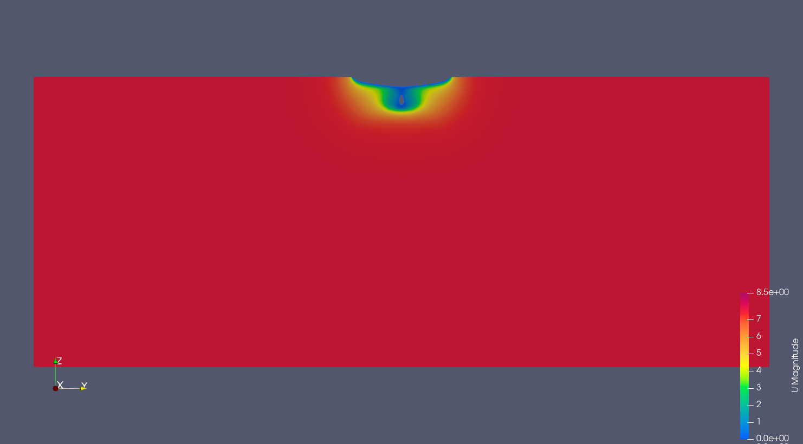
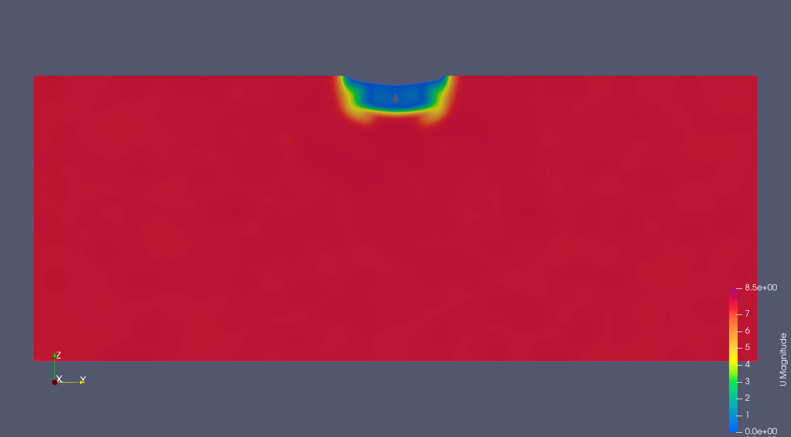
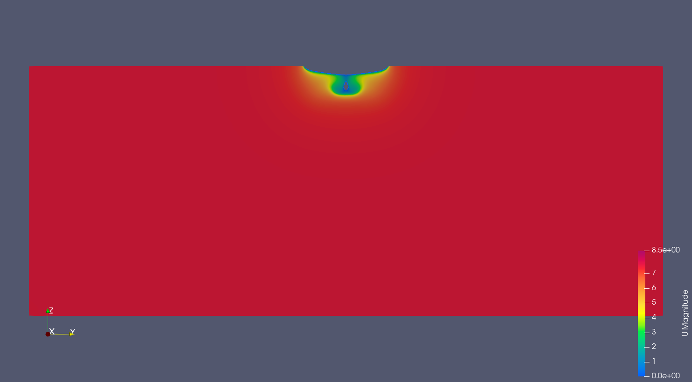
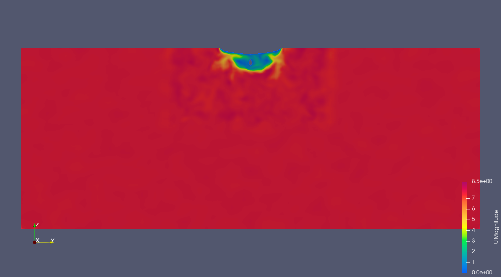
Módulo de la velocidad en el plano de la hélice para el casco real, con la misma malla.
Estela del casco
El campo de estela en el plano de la hélice es marcadamente no uniforme, concentrado en torno a la línea de quilla y la bocina. La fracción de estela media en el radio de mayor carga es w = 0,3727, dentro del rango típico para petroleros (0,25–0,4). Su distribución resulta más concentrada que la media luna característica, algo que se atribuye a la resolución de malla con funciones de pared, así que las cargas no estacionarias sobre la hélice y los armónicos de la BPF podrían estar parcialmente subestimados.
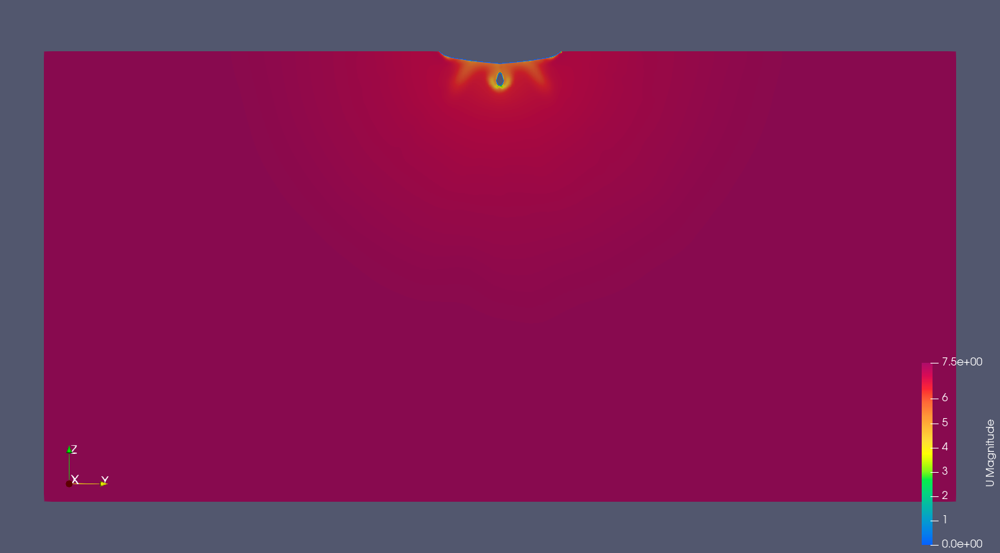
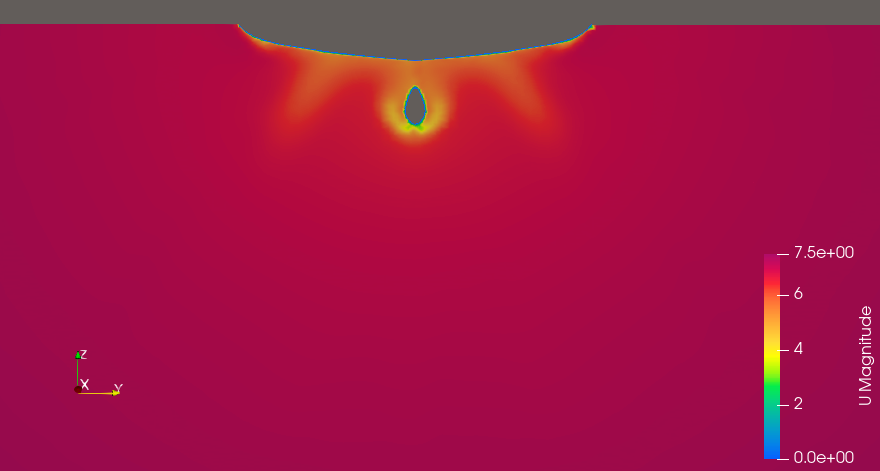
Hélice
La simulación con la estela turbulenta del casco como entrada no convergió: se obtuvo un empuje de signo opuesto al esperado y residuos crecientes. Tras descartar errores de configuración (geometría, sentido de giro, sistema de referencia), el problema se atribuyó a la interfaz rotor-estator (NCC) ante los fuertes gradientes de velocidad. Por ello, los resultados de la hélice y de la acústica corresponden a entrada uniforme.
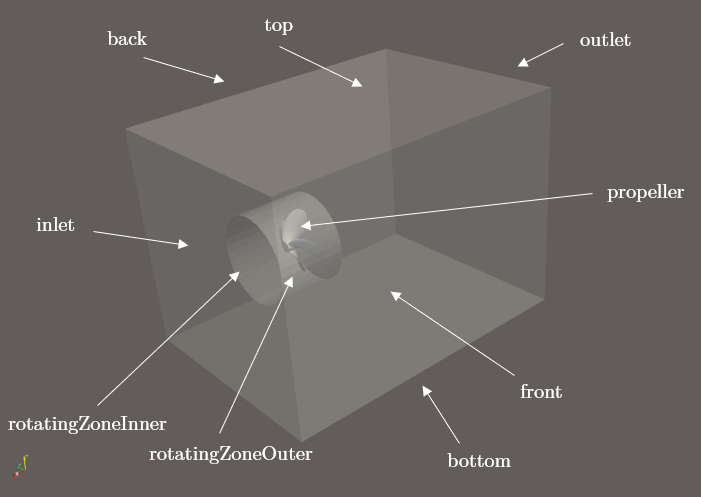
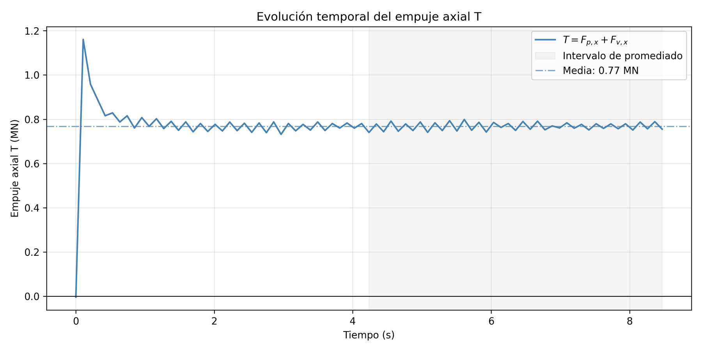
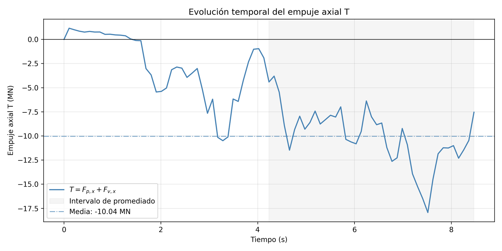
| Coeficiente | Simulado | Wageningen B | Desviación |
|---|---|---|---|
| KT | 0,086 | 0,1067 | 19,4 % |
| KQ | 0,014 | 0,01343 | 4,2 % |
| η0 | 0,430 | 0,556 | 22,6 % |
Punto de diseño J = 0,44, frente a la serie Wageningen B (P/D = 0,6). Desviación = |referencia − simulado| / referencia.
KQ se ajusta bien (4,2 %), mientras que KT (19,4 %) y η0 (22,6 %) superan el rango habitual en RANS para esta serie (5–10 %). Se atribuye a usar la estela nominal en lugar de la efectiva, a las limitaciones de RANS para capturar el vórtice de punta de pala y a la resolución de malla en el borde de ataque y la punta.
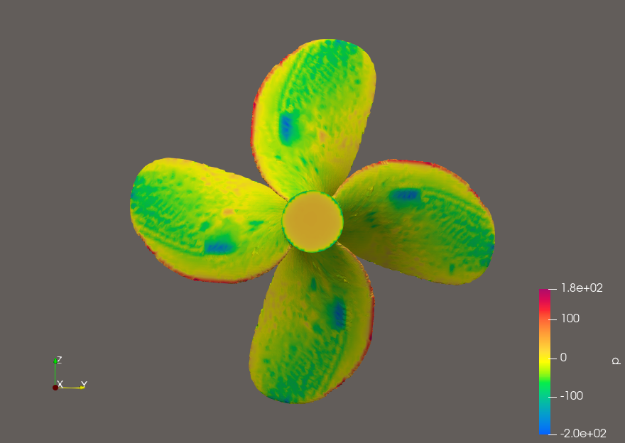
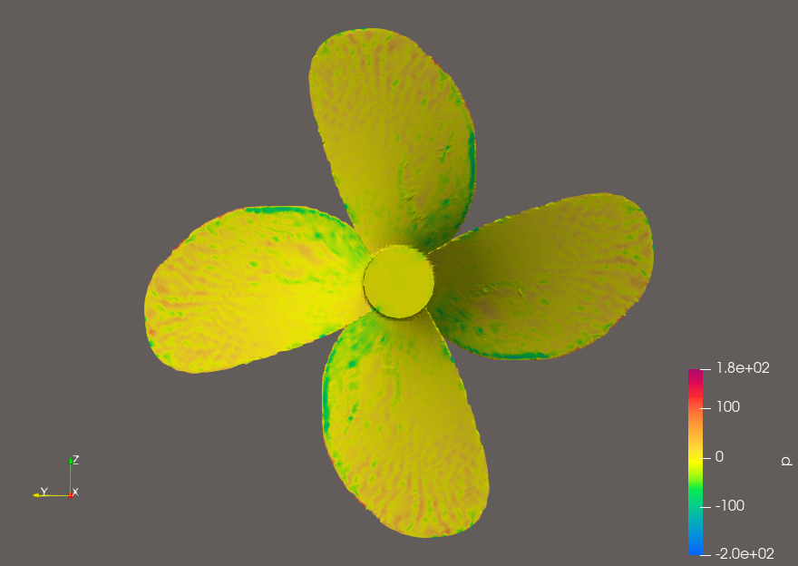
Acústica
Con la formulación de Farassat 1A se calculó la presión acústica en 16 receptores: cuatro sobre el eje longitudinal y doce en una corona de radio igual a la eslora (≈ 275 m), cada 30°. La señal p′(t) muestra un transitorio inicial seguido de un régimen cuasi-periódico, pero con un valor medio no nulo (del orden de 200 Pa) que no es coherente con una presión acústica pura. Puede deberse a una componente hidrodinámica o de campo cercano en la señal y a la limitada calidad de RANS como entrada para el cálculo.
El SPL a la BPF (4,72 Hz) es de 99,08–99,14 dB re 1 µPa en los 12 receptores de la corona: un patrón axisimétrico que coincide con la teoría de Gutin para una hélice con entrada uniforme. Es una comprobación de la consistencia del postproceso, no una predicción del ruido del buque en condiciones reales.
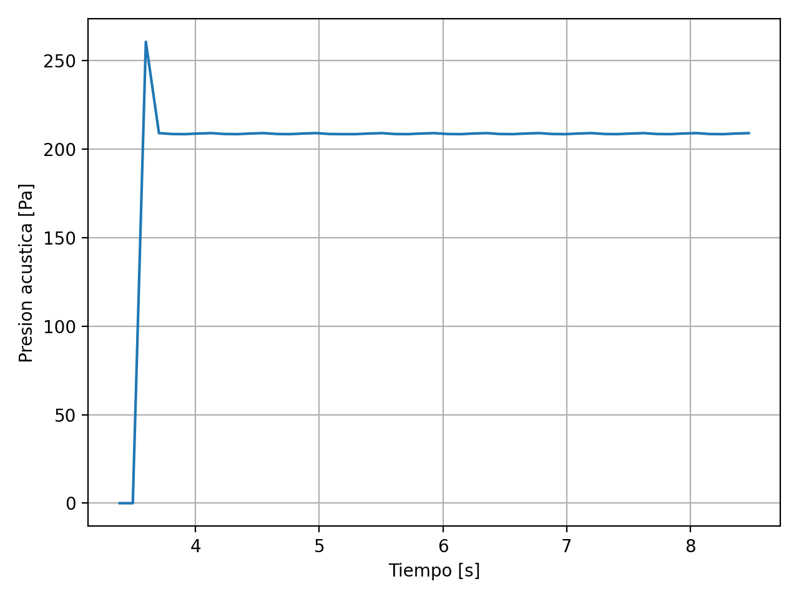
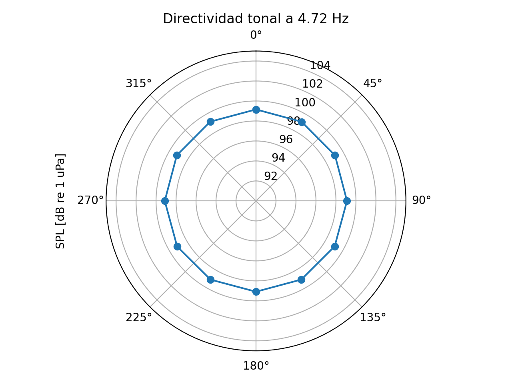
Limitaciones y trabajo futuro
- El caso con la estela turbulenta del casco no convergió, por lo que los resultados corresponden a entrada uniforme y a la estela nominal, no a la efectiva.
- La señal acústica tiene un valor medio no nulo, no se modela la superficie libre ni la cavitación.
Como trabajo futuro, resolver la convergencia en la interfaz rotor-estator (refinamiento local de malla, formulación AMI, ajuste del número de Courant y de la subrelajación) y modelar la cavitación con un solver bifásico.